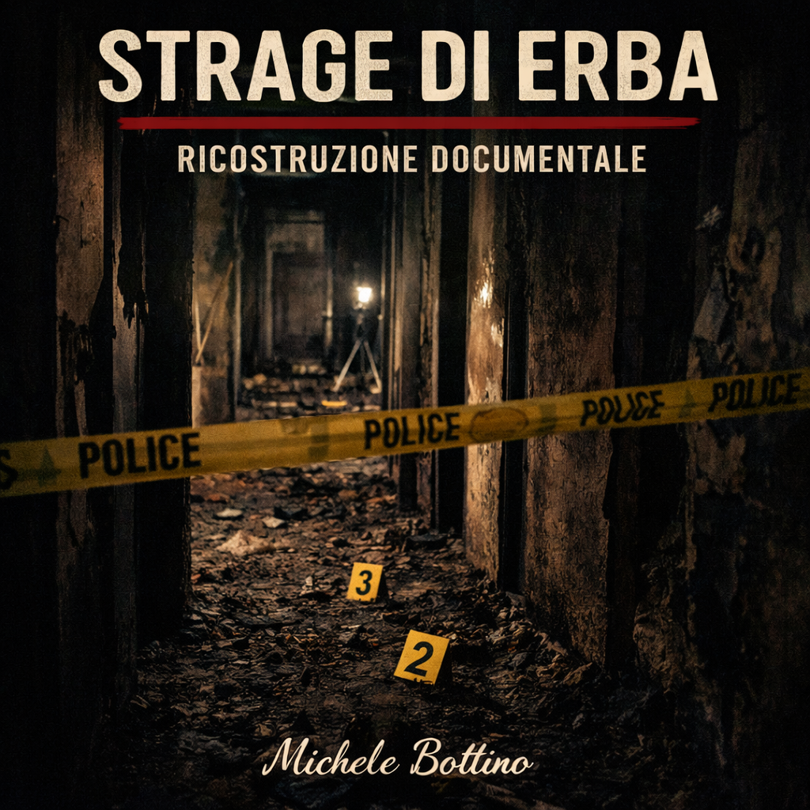

La strage di Erba è uno dei casi in cui la distanza tra definizione giudiziaria e conflitto narrativo si manifesta in modo più netto. L’11 dicembre 2006, all’interno di un contesto condominiale segnato da rapporti difficili e tensioni pregresse, si consuma un massacro che lascia quattro vittime: Raffaella Castagna, il piccolo Youssef Marzouk, Valeria Cherubini e Paola Galli. La scena è brutalmente segnata dalla violenza e da un incendio appiccato dopo l’aggressione. Fin dall’inizio, quindi, il caso si presenta come una struttura in cui omicidio plurimo e alterazione della scena coincidono.
Dal punto di vista dei dati stabili, alcuni elementi emergono con forza. Le vittime vengono colpite all’interno dell’abitazione. L’incendio interviene successivamente, in una funzione chiaramente compatibile con la distruzione o la compromissione delle tracce. C’è un unico sopravvissuto, Mario Frigerio, e proprio la sua testimonianza assumerà un peso centrale. Questo dettaglio è decisivo, perché colloca il caso in una forma particolare: non una sequenza costruita solo su indizi materiali, ma una struttura in cui dichiarazioni, confessioni e riscontri si intrecciano in modo molto stretto.
Il nome di Olindo Romano e Rosa Bazzi emerge rapidamente come nucleo dell’ipotesi accusatoria. Il processo si costruisce attorno a più elementi: le confessioni rese nelle prime fasi, la loro successiva ritrattazione, i rapporti di vicinato, la testimonianza del sopravvissuto, alcuni riscontri materiali e la ricostruzione complessiva della dinamica. Ed è proprio questo intreccio a definire la natura del caso. Non esiste, da solo, un unico elemento che possa spiegare tutto. La forza del quadro processuale deriva dalla convergenza di più segmenti.
Le confessioni rappresentano uno dei punti più delicati. Da una parte costituiscono un elemento fortissimo: due imputati che descrivono il delitto. Dall’altra, la successiva ritrattazione apre una frattura immediata. Questo produce una tensione strutturale che accompagnerà il caso per anni. Le confessioni sono state spontanee o indotte? Hanno un valore diretto o vanno lette solo in relazione agli altri dati? Sono il cuore della prova o un elemento da trattare con cautela? La persistenza di queste domande ha alimentato una parte rilevante del conflitto narrativo successivo.
Accanto alle confessioni, la testimonianza di Mario Frigerio ha avuto un peso enorme. È il solo sopravvissuto e, di conseguenza, il solo testimone diretto dell’aggressione. Il suo riconoscimento degli aggressori diventa uno dei cardini della struttura accusatoria. Ma anche qui si inserisce uno dei principali terreni di contestazione: le condizioni fisiche, la memoria, la possibilità di influenza, il tempo intercorso, la qualità della percezione in una scena di violenza estrema. Come in altri casi molto esposti, un elemento fortissimo diventa anche il centro della frattura interpretativa.
Il processo arriva a condanne definitive per Olindo Romano e Rosa Bazzi. Questo è il dato processuale che va descritto senza trasformarlo automaticamente in una categoria più ampia di “verità storica assoluta”: è certo che il giudicato attribuisce loro la responsabilità e che i successivi tentativi di revisione non lo hanno rovesciato. Le contestazioni, le nuove consulenze e le iniziative successive appartengono a un piano diverso e devono essere valutate per ciò che effettivamente producono.
La particolarità del caso sta quindi nell’intreccio degli elementi valutati nei processi. Confessioni poi ritrattate, testimonianza del sopravvissuto, riscontri materiali, dinamica e contesto non hanno avuto tutti lo stesso peso né la stessa natura, ma sono stati letti congiuntamente dai giudici. Le critiche successive hanno agito proprio su questi snodi, cercando di mettere in discussione singoli passaggi o la loro capacità di sostenersi reciprocamente.
Nella mia lettura, questo permette di evitare due semplificazioni opposte. La prima consiste nel trattare ogni contestazione successiva come prova che il processo debba essere riaperto; la seconda nel considerare inutile qualsiasi verifica soltanto perché esiste un giudicato definitivo. Il punto documentabile, oggi, è più preciso: Olindo Romano e Rosa Bazzi restano condannati in via definitiva, i tentativi di revisione esaminati non hanno modificato questo stato e le iniziative successive devono essere valutate separatamente per gli effetti che eventualmente produrranno. Il dibattito può continuare; il dato processuale cambia soltanto attraverso gli strumenti previsti dall’ordinamento.

La strage di Erba
Convergenza giudiziaria e persistenza del conflitto narrativo
Classificazione: Caso reale / Analisi documentaria
Stato del caso: Chiuso sul piano giudiziario
Livello di certezza: Alto sul piano processuale, discusso sul piano narrativo
Metodo applicato: Bottino Method · MRN v1.2 – Metodo delle Rotture Narrative
Tag: Erba, Olindo Romano, Rosa Bazzi, Mario Frigerio, strage di Erba, cronaca giudiziaria, analisi documentaria
Aggiornamento al 5 ottobre 2026: Il 25 marzo 2025 la Cassazione ha rigettato i ricorsi contro il no alla revisione delle condanne definitive di Olindo Romano e Rosa Bazzi. Il 31 marzo 2026 Cuno Tarfusser ha reso nota la presentazione di un esposto alla Procura di Bolzano chiedendo verifiche sull’operato dei magistrati che avevano riesaminato il caso. L’esposto è un’iniziativa distinta: non riapre il processo e non modifica le condanne definitive.
Come leggo questo aggiornamento: una condanna definitiva, una richiesta di revisione e un esposto sull’operato di magistrati sono atti diversi. Il giudicato resta invariato; le contestazioni contenute nell’esposto appartengono invece all’iniziativa del suo proponente e non diventano accertamenti per il solo fatto di essere state depositate.
Per questo tengo distinto ciò che produce effetti processuali da ciò che mantiene aperto il dibattito pubblico: la persistenza di contestazioni può essere rilevante per comprendere il caso, ma non equivale alla riapertura del processo.